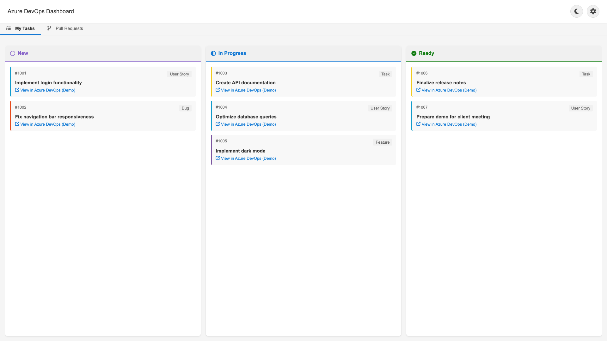

Stay on top of your Azure DevOps tasks, directly in Chrome
Access and manage your Azure DevOps tasks without switching contexts, right in your browser's new tab or with a simple click.


Access and manage your Azure DevOps tasks without switching contexts, right in your browser's new tab or with a simple click.
View your tasks in an intuitive kanban board layout that makes tracking progress easy.
Get up-to-date information on your tasks with automatic sync from Azure DevOps.
Access your tasks every time you open a new tab, making task management seamless.
Connect to multiple Azure DevOps organizations and projects simultaneously.
Switch between light and dark themes based on your preference.
Choose to display tasks in new tab, popup, or both according to your workflow.
Download and install the extension from the Chrome Web Store.

Navigate to your Azure DevOps organization settings and create a PAT with the following scopes:

Open the extension settings by clicking the gear icon and add your connection details:

Select how you want the extension to appear:

Your Azure DevOps tasks are displayed in a kanban board with columns representing different states (To Do, In Progress, Done).

Each task includes a direct link to open it in Azure DevOps for additional actions like state changes or comments.
Click on any task card to view its full details, including description, acceptance criteria, and metadata.

Tasks from all your connected Azure DevOps organizations and projects will appear in the same board.

Yes, your data is secure. The extension only stores your PAT locally in your browser's secure storage and communicates directly with Azure DevOps API. No data is transmitted to third-party servers.
Currently, the extension supports cloud-based Azure DevOps only. Support for on-premise installations may be added in future updates.
The extension automatically refreshes data when you open a new tab or the popup.
Currently, the extension provides a read-only view of your tasks. To update task status, use the "Open in Azure DevOps" link to access the full Azure DevOps interface.
At this time, the extension is only available for Google Chrome. Support for other browsers like Firefox or Edge may be considered in future releases.